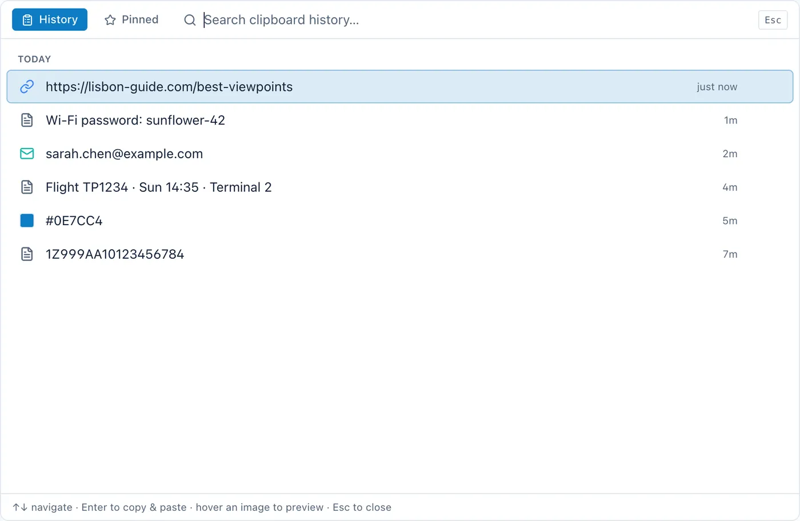
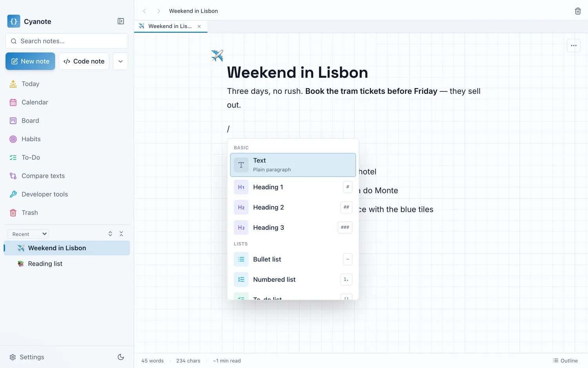
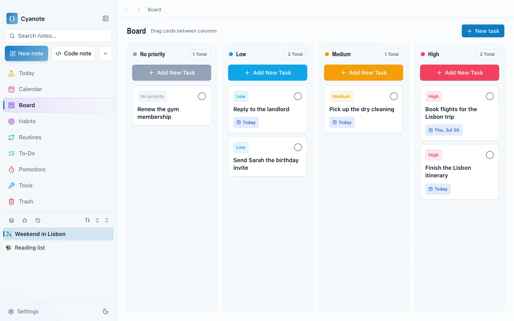
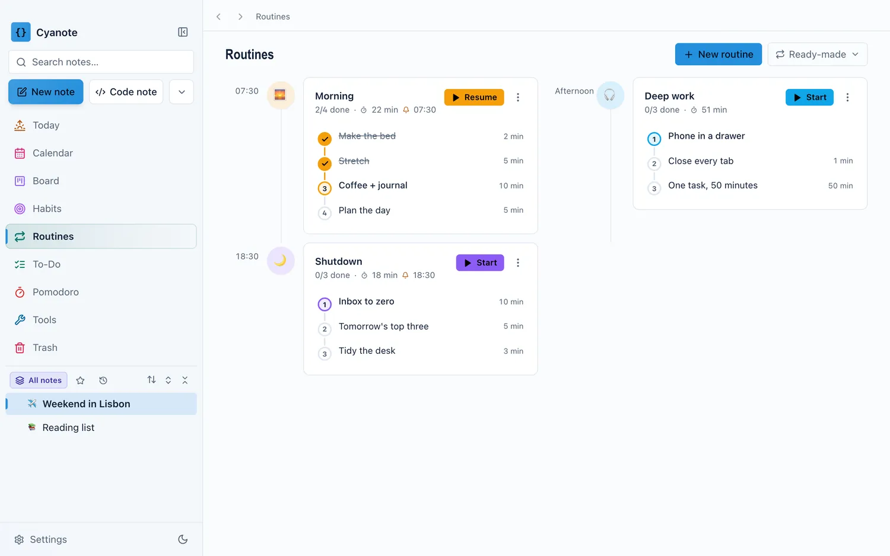
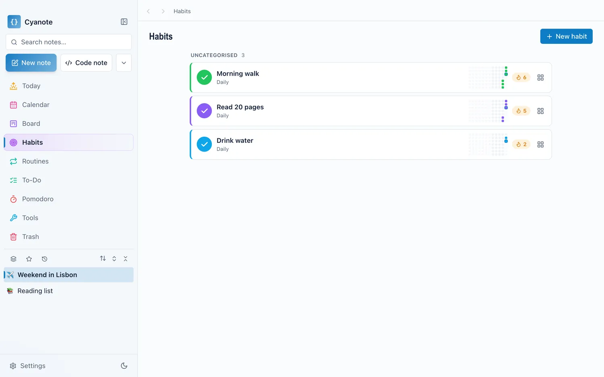
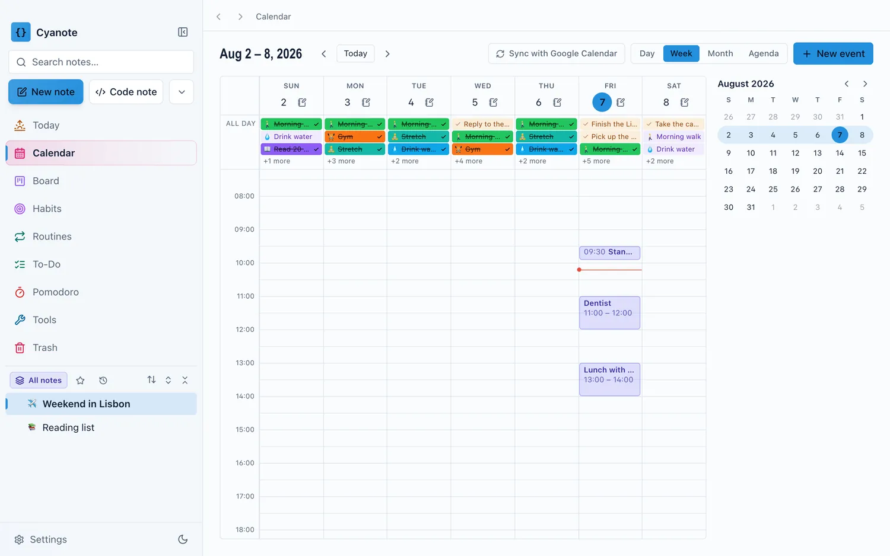
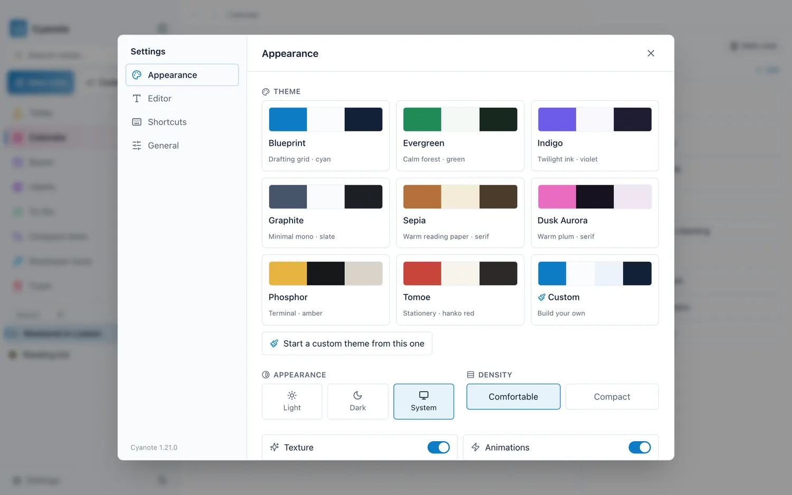

Notes, tasks and a clipboard
manager in one quiet app.
Five subscriptions’ worth of app, bought once for $7.99. Everything stays on your computer — no account, no sync.
One-time purchase · macOS 12+ · Windows version on the Microsoft Store
One-time purchase on the Microsoft Store · Windows 10 or later
Cyanote is a desktop app. Open this page on your Mac or Windows PC to get it.
- Version 1.2.0, first released 11 August 2026
- Launched on Product Hunt
- Signed and notarized by Apple
- Sold on the Microsoft Store
See how it compares to Paste, Notion, NotePlan and the rest.
One app instead of five.
Five subscriptions, five windows, five places your week ends up.
Cyanote is a one-time-purchase app for Mac and Windows that combines notes, to-dos, a calendar, habit tracking and a system-wide clipboard manager in a single window. Everything is stored locally on your own computer: there is no account to create, no sync service, and no subscription. It costs $7.99 once and runs on macOS 12 or later; the Windows version, for Windows 10 or later, is a separate $7.99 purchase on the Microsoft Store.
Notes & code notes
Slash commands, tables, sub-pages, wiki-links.
To-dos & board
Priorities, due dates, reminders, Kanban.
Calendar
What's due, what's next, in one view.
Habits
Streaks that actually stick.
Routines & Pomodoro
Timed checklists and a focus timer.
Clipboard manager
Every copy kept, a hotkey away.
Themes & typography
Fifteen themes, or build your own.
Instant search
Full-text across every note, ranked.
A clipboard manager that remembers.
Every copy kept in a searchable history, open from any app with one global hotkey.
More about the clipboard manager, including how it compares to Paste, Maccy and Raycast.

Every view, in one window.
No demo account, no onboarding tour. This is the app.






Coming from something else?
What you would be leaving, and what Cyanote adds.
| If you use | It costs | What Cyanote adds |
|---|---|---|
| Paste | $29.99/yr, or $89.99 once | Notes, to-dos, a calendar and habits in the same window as the clipboard |
| Notion | Free for one person | Opens instantly, works offline, needs no account — and has a clipboard manager |
| NotePlan | $12/mo, or $99/yr | The same shape of app, bought once instead of rented |
| Lunatask | $6/mo annually, or $300 once | A clipboard manager, and nothing to sign in to |
Prices checked 13 August 2026. Obsidian, Maccy and Things 3 are on the full comparison page, along with the cases where one of these is the better buy — several of them are.
Pay once. Yours to keep.
No subscription, no trial clock, no upsell.
- Every feature — notes, tasks, board, calendar, habits, routines, Pomodoro, clipboard
- Works offline, stays on your computer
- Fourteen days to change your mind (Mac), no reason needed. Windows copies are refunded through the Microsoft Store, under Microsoft’s refund policy.
Open this page on your Mac or Windows PC to buy — the app runs on a computer, not a phone.
Everything the $7.99 includes — and what it does not.
Common questions about Cyanote
How do I get it after paying?
On a Mac, a download link appears as soon as checkout completes, and the same link arrives by email along with your licence key. Open the disk image, drag Cyanote to your Applications folder, launch it, and paste the key once when it asks. That is the whole setup: there is no account to create, no email address to verify, and no password to choose. The key is checked on that first launch and never again, so the app keeps working on a machine that is offline, on a machine that never sees the internet again, and on the day this website stops existing. If you lose the key it is still in your checkout email, and if you lose the email, one message to support gets it back. On Windows there is no licence key at all: you buy and install Cyanote from the Microsoft Store like any other Store app, there is nothing to paste when it first opens, and its updates come through the Store.
Where is my data stored?
On your own computer, in a single SQLite database file. On a Mac it is kept under ~/Library/Application Support/; on Windows it is in the Cyanote folder in your user folder (C:\Users\<you>\Cyanote), where you can see it, and uninstalling the app does not delete it. There is nowhere else for it to go: Cyanote has no account system, no sync service, no analytics and no telemetry, so nothing you write is uploaded anywhere. The only time the Mac app talks to the network on its own is when it checks whether a new version exists; the Windows app does not even do that, because the Microsoft Store delivers its updates. You can move that database file to any folder you like — an external drive, or a folder your own backup tool already watches — and Cyanote will keep using it there. Individual notes can be locked with a password, and a locked note's plaintext is not left behind in freed database pages. Because it is one ordinary file in an ordinary folder, Time Machine already backs your notes up on a Mac without being told to, and on Windows any backup that covers your user folder includes it.
Which computers is it for?
Macs running macOS 12 (Monterey) or newer. Cyanote ships as a universal binary, so it runs natively on both Apple Silicon and Intel Macs — no Rosetta, and no choosing between two downloads. It is signed and notarized by Apple, so Gatekeeper opens it without the unidentified-developer warning that unsigned downloads trigger. It is a desktop app: there is no iPhone or iPad version and nothing to log into in a browser. Cyanote is also available for Windows 10 and later, sold on the Microsoft Store for $7.99 as a separate purchase from the Mac version. The Mac version is not on the Mac App Store — it is sold directly, which is part of what makes a one-time price and a no-account design possible.
Is there a free trial?
No, and deliberately not. If you would rather see it before you pay, there is a free demo that runs in your browser — notes, the today view, habits, the calendar and the clipboard manager to click around in, though nothing you type there is saved. What there is instead of a trial is a fourteen-day refund on the Mac version: buy it, use it properly, and if it is not for you, one email gets your $7.99 back — no reason required, no proof that you uninstalled it, no form. That is a better deal than a trial for the same reason it is a worse funnel: a trial asks you to evaluate an app in the fortnight you happen to have free, against a clock, whereas a refund lets you use it the way you would actually use it and decide afterwards. The refund window is the same whether you ask on day one or day fourteen, and asking for one does not cost you the updates you already downloaded. Microsoft Store purchases of the Windows version are refunded under Microsoft's Store refund policy, not by us.
Does it sync between my computers, or to my phone?
No. Cyanote has no sync service, and this is the direct cost of the design rather than a feature waiting to be built: sync needs a server, a server needs an account, and an account is the thing this app is built not to have. Your notes live in one SQLite file on one computer. That holds on Mac and on Windows, and between the two: nothing syncs a Mac with a Windows PC either, and the two versions are separate purchases. If you want that file on a second machine of the same kind, you can put it in a folder that iCloud Drive, Dropbox or Syncthing already watches and point Cyanote at it there — that works, but it is your sync setup and your conflict risk, not a supported feature, so do not run it in both places at once. There is no iPhone, iPad or Android app and none is planned. If reading your notes on a phone is something you need, Cyanote is the wrong app and Apple Notes or Obsidian will serve you better.
How is it different from Notion, Paste or Apple Notes?
Against Notion: Cyanote opens instantly, works with the wifi off, needs no account, and includes a clipboard manager — Notion is more powerful, collaborative and cross-platform, and free for one person, so if you work with other people it wins outright. Against Paste and the other Mac clipboard managers: several are better at being a clipboard manager alone and several cost less, but none of them holds your notes, to-dos, calendar and habits in the same window. Against Apple Notes: Cyanote adds tasks, a board, a calendar, habits, routines and clipboard history, and stores everything in one file you can move; Apple Notes is free, syncs to your phone and is already installed. Each of these is argued at length, with prices and with the cases where the other app is the better buy, on the comparison pages.
Still wondering something? Email support@cyanote.app.
Get your week into one app.
$7.99 once. No subscription, no account.
$7.99 once, on the Microsoft Store.
$7.99 once, on your Mac or Windows PC. No subscription, no account.